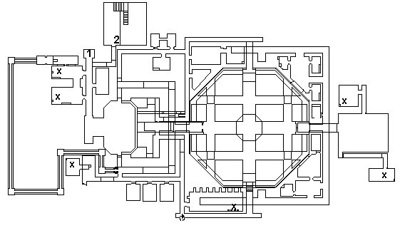

Free Haven: Control Center

| 1. | Entrance |
| 2. | Read the sign on the wall to get the Blaster Skill (Ancient Weapon) |
| X | Chests where you can find Blasters and or Blaster Rifles |
This is VERY tough. The Terminators will eradicate you. You can get this fiexd by casting resurection, or visiting the Temple you resotred in Free Haven. They only have 1080 Hit points, but seem to be pretty stong in defense just like the Oracle said. Blasters do some damage. I had my skill up to 10 Masters, and was only doing 25-30 damage. Inferno was working well as was Implostion. But level 20 Master. Once you get enough weapons to supply your party, you can leave, or not bother to get them all some. There are some chest's that have a bunch of memory crystals, and control cubes, they are the two right most ones. But they are useless.
Leave me a mgrounds@hotmail.com